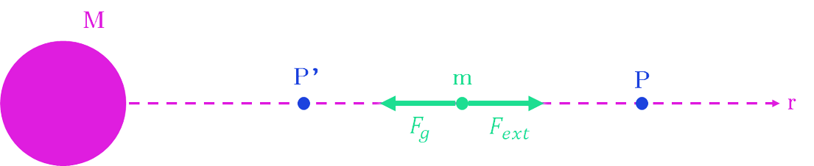

Gravitational Potential and Potential Energy
Warning
All of this is directly copied from Year 4 Physics Chapter 4 notes
Gravitational Potential Energy \(U\)
Before we define Gravitational potential energy, we first have to observe that it requires energy to make an object move away from another (e.g. trying to keep anything up in the air, away from Earth requires energy)
We also know that the energy required to keep an object away from another object decreases the further away the 2 objects are (because \(F_g\) decreases)
So let's start defining \(U\) to be \(0\) when 2 objects are infinitely far apart. As they are infinitely far apart we can loosely say that they basically do not interact, so no additional energy is required to keep it in place (note that this can technicaly be any value we choose, its just defined like that).
So how do we actually get a value for \(U\) for an object \(r\) away from the other?
Now lets assume we fix 1 object such that it doesn't move for simplicity, and say we are moving the other object towards \(r\). As this object moves towards the other object, it will experience a force and accelerate due to \(F_g\). This will cause its Kinetic energy \(K\) to increase, so let's invent a mysterious force \(F_{mysterious}\) to counterract \(F_g\) at every point in space in just the right way such that \(F_{net} = 0\), (i.e. \(F_g = -F_{mysterious}\)) so there is no net acceleration and Kinetic Energy stays constant.
We can now compare the Total Energy \(TE\) of the moving object:
At \(r=\infty\) we have:
as we defined \(U_\infty = 0\). And when the object is at distance \(r\) from the other object the total energy becomes:
K remains constant as we invoked \(F_{mysterious}\) to ensure no net acceleration.
We know that \(F_{mysterious}\) is clearly putting energy into the system, so we can say that:
However we also know:
Therefore:
A vectorized version of this will be covered sometime later.
Warning
Most people call this \(F_{mysterious}\) as 'force aplied by external agent'
OK but why is it negative
- we define \(U\) to be \(0\) at infinity
- Due to attractive nature of gravity, force applied by external agent (\(F_{mysterious}\)) is directed away from the mass.
- Work done by external agent/mysterious is negative since the force is opposite in direction to the displacement of the mass m (\(\text{Work done} = Fs\cos\theta\))
\(U\) is a scalar, not a vector, it doesn't have a direction. It just simply means that \(U_{near} < U_{far}\) because you need to input energy to move an object to near to far, and that energy gets converted Gravitational Potential Energy, i.e. \(U_{near} + \Delta E = U_{far}\)


Question


The diagram shows 2 points X and Y at distance \(L\) and \(3L\) respectively, from the center of the earth (of mass \(M\)). Find an expression for the change in the gravitational potential energy of a mass \(m\) as it is brought from X to Y.
This makes sense as \(\frac{2GMm}{3L}\) is positive and you need to put in energy for an object to "move up the gravitational well"
TL;DR: It is defined as work done by an external agent to bring a mass from infinity to that point
\(mgh\)?
Show that the expression \(mgh\) is valid for small distances from the surface of the earth.
We can approximate \(R_\oplus(R_\oplus+h) \approx R_\oplus^2\) since \(R_\oplus \gg h\)
Gravitational Potential \(\phi\)
\(U\) depends on the source mass and the test mass. To eliminate dependece on the test mass, we use gravitational potential \(\phi\).
Gravitational Potential \(\phi\) is essentially just \(U\) per unit mass, hence you can deduce the formula is:
\(\phi\) is also a scalar like \(U\), but unlike \(U\), it does not matter what the test mass is. It is also negative like \(U\).


There are a few things to note:
-
Red lines (equipotentials) represent areas where \(\phi\) is constant. There is no work done on an object when moving along an equipotential
-
The closer the equipotential lines, the greater the gravitational field strength \(g\). Since the equipotentials are geting more spaced out the further you go from earth, \(g\) decreases with increasing \(r\).
-
The change in potential (\(\Delta\phi\)) or the change in GPE (\(\Delta U\)) is independent of the path taken by the object. It only depends on the start and end points. i.e. \(\Delta\phi = \phi_{endpoint} - \phi_{startpoint}\) is true for all paths. (you can also replace \(\phi\) with \(U\))


-
The minimum work per unit mass to remove an object out of a potential well due to the earth is \(\frac{GM}{R_\oplus}\) (this is just \(-U\) at surface of earth, because \(U=0\) means escaping the potential well, which means \(r\rightarrow\infty\))
Relationships between \(F_g\), \(\frac{dU}{dr}\) and \(g\), \(\frac{d\phi}{dr}\)

bad color theory in action
Consider a mass \(M\) fixed in space. Suppose we move a mass m from Point P to P' in the gravitational field of \(M\) by applying an external force \(F_{ext}\) (you may know this as the \(F_{mysterious}\) from earlier) such that there is no change in KE of \(m\). Then: \(F_{ext} = -F_g\)
We also know that \(\text{Work Done} = \Delta U\). Plugging in the integral formula for Work Done, we have:
If we divide both sides by \(m\) we get:
This is known as the potential gradient which is numerically equal to gravitational field strength. The negative sign indicates that the gravitational field points in the direction of decreasing \(\phi\).
Summary


low quality image stolen from physics notes. "\(xm\)" should really be "\(\times m\)", and "\(1 \div m\)" really means "\(\times (1\div m)\)" or just "\(\div m\)"